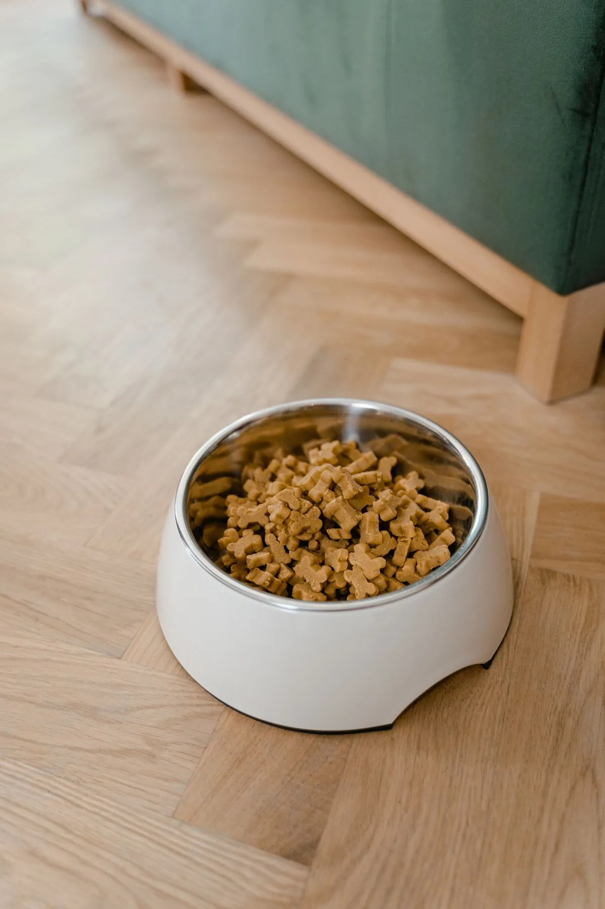

Thức ăn khô hay ướt cho chó mèo: chọn thế nào cho đúng
Tác giả: Nguyễn Trung Đức
Đứng trước kệ thức ăn cho thú cưng, người mới nuôi thường bối rối: một bên là những bao hạt khô to, một bên là những lon, túi thức ăn ướt mềm. Người bán hàng nào cũng có lý do để khuyên bạn chọn loại của họ. Bạn bè nuôi chó mèo lâu năm thì mỗi người một ý: người bảo hạt khô tốt cho răng, người bảo thức ăn ướt mới tốt cho mèo vì mèo lười uống nước. Vậy đâu mới là câu trả lời đúng?
Câu trả lời ngắn gọn là: không có dạng thức ăn nào tự động tốt hơn dạng còn lại cho mọi con chó, mọi con mèo. Cả thức ăn khô lẫn thức ăn ướt đều có thể đầy đủ dinh dưỡng, và cả hai đều có thể không phù hợp với một con vật cụ thể. Việc chọn đúng không nằm ở việc chạy theo một dạng thức ăn được quảng cáo là "tốt nhất", mà nằm ở việc hiểu con vật của mình cần gì, đọc đúng nhãn mác, và hỏi bác sĩ thú y khi có bệnh lý đi kèm. Bài viết này giúp bạn so sánh hai dạng thức ăn một cách thực tế, dựa trên các hướng dẫn của các tổ chức thú y, để bạn tự chọn được phương án phù hợp với con vật và với khả năng của gia đình mình.
Điều đầu tiên cần kiểm tra: dòng chữ "complete and balanced"
Trước khi so sánh khô hay ướt, có một việc quan trọng hơn nhiều: kiểm tra xem thức ăn đó có ghi là đầy đủ và cân bằng hay không. American Kennel Club (AKC) khuyên người nuôi nên tìm trên nhãn dòng chữ "complete and balanced diet" — thức ăn đầy đủ và cân bằng — vì đây là dấu hiệu chính cho thấy đó là một loại thức ăn chất lượng. Một bài tổng hợp về thức ăn ướt và khô cũng nhấn mạnh điều tương tự: hãy kiểm tra trên bao bì câu xác nhận thức ăn đầy đủ và cân bằng cho đúng loài và đúng giai đoạn sống của pet, trước khi quyết định chọn dạng nào.
Vì sao dòng chữ này quan trọng đến vậy? Vì "khô" hay "ướt" chỉ mô tả cách chế biến và lượng nước trong thức ăn, chứ không nói lên thức ăn đó có đủ chất hay không. Một bao hạt khô rẻ tiền nhưng thiếu chất vẫn là thức ăn thiếu chất. Một lon thức ăn ướt đắt tiền nhưng không ghi đầy đủ và cân bằng vẫn có thể không đáp ứng đủ nhu cầu của pet. Ngược lại, cả hạt khô lẫn thức ăn ướt đều có thể là thức ăn đầy đủ và cân bằng nếu được sản xuất đúng chuẩn.
Một điểm nữa cũng cần nhớ: chó và mèo có nhu cầu dinh dưỡng khác nhau. Mèo cần một số chất dinh dưỡng mà cơ thể chúng không tự tổng hợp được, trong khi chó thì khác. Vì vậy thức ăn cho chó có thể không đáp ứng đủ nhu cầu của mèo, dù là hạt khô hay thức ăn ướt. Khi mua, hãy chọn đúng loại ghi rõ dành cho chó hoặc dành cho mèo, và đúng giai đoạn sống: chó mèo con, trưởng thành hay già. Đừng dùng chung một loại thức ăn cho cả chó và mèo trong nhà chỉ vì tiện.
Hiệp hội Thú y Hoa Kỳ (AVMA) trong hướng dẫn về nuôi pet cũng nhắc người nuôi phải cung cấp thức ăn phù hợp cho pet của mình. "Phù hợp" ở đây không chỉ là ngon miệng, mà là phù hợp với loài, tuổi, cân nặng, sức khỏe và mức vận động của từng con. Nếu pet của bạn có bệnh lý, ví dụ bệnh thận, tiểu đường hay dị ứng thức ăn, thì việc chọn thức ăn không còn là chuyện sở thích nữa mà cần hỏi bác sĩ thú y. AKC cũng nhắc rõ: bác sĩ thú y là nguồn thông tin tốt nhất về sức khỏe và dinh dưỡng của chó.
Thức ăn khô: tiện lợi, rẻ hơn, nhưng ít nước
Thức ăn khô, thường gọi là hạt hay kibble, là dạng thức ăn phổ biến nhất hiện nay. Ưu điểm lớn nhất của nó là tiện lợi. Bạn đong bằng cốc, đổ vào bát là xong. Hạt khô bảo quản được lâu ở nhiệt độ phòng, dễ mang theo khi đi xa, dễ dùng trong các đồ chơi xếp hình hay thảm đánh hơi để làm giàu môi trường cho pet. Về chi phí, theo Merck Veterinary Manual, thức ăn khô thường rẻ hơn thức ăn ướt khi tính trên cùng một lượng calo. Với nhà nuôi chó lớn, ăn nhiều, chênh lệch chi phí này không hề nhỏ.
Một ưu điểm khác của hạt khô là dễ chia khẩu phần. Bạn đong đúng lượng theo hướng dẫn trên bao bì và theo tư vấn của bác sĩ thú y, rồi cho ăn đúng bữa. Việc này giúp bạn kiểm soát cân nặng của pet tốt hơn, nhất là với những con dễ béo. Hạt khô cũng ít gây bừa bộn: bát ăn sạch sẽ hơn, thức ăn thừa trong bát không ôi nhanh như thức ăn ướt đã mở.
Nhược điểm lớn nhất của hạt khô là ít nước. Hạt khô chỉ chứa một lượng nước rất nhỏ, nên pet ăn hạt khô phải uống bù nước bằng cách uống nước trong bát. Với chó, chuyện này thường không khó vì chó uống nước khá đều. Với mèo thì khác: mèo vốn uống ít nước, có tổ tiên sống ở vùng khô hạn và lấy phần lớn nước từ con mồi. Một con mèo chỉ ăn hạt khô mà lại lười uống nước có thể không nạp đủ nước trong ngày. Đây là lý do nhiều người nuôi mèo quan tâm tới thức ăn ướt, và chúng ta sẽ nói kỹ hơn ở phần sau.
Một hiểu lầm phổ biến về hạt khô là "ăn hạt khô sẽ sạch răng". Sự thật không đơn giản như vậy. Theo VCA, hạt khô thường không được coi là biện pháp chăm sóc răng miệng. Một số khẩu phần đặc biệt được sản xuất riêng để hỗ trợ răng nướu thì khác, nhưng hạt khô thông thường không có tác dụng làm sạch răng đáng tin cậy. Nếu bạn muốn chăm sóc răng cho pet, hãy xem lại Vệ sinh răng miệng cho chó mèo tại nhà của website này về vệ sinh răng miệng, trong đó có hướng dẫn chải răng và kiểm tra răng miệng hằng tuần. Đừng trông chờ vào hạt khô để thay thế việc chải răng hay khám răng định kỳ.
Về bảo quản, thức ăn khô nên được giữ trong hộp kín, theo khuyến nghị của Cornell (qua bài tổng hợp Animalso). Hộp kín giúp hạt không bị ẩm, không bị mất mùi và không bị côn trùng xâm nhập. Bạn cũng nên đậy kín bao sau mỗi lần lấy thức ăn, để bao ở nơi khô ráo, thoáng mát, tránh ánh nắng trực tiếp. Hạt khô đã đổ ra bát mà pet không ăn hết trong ngày thì nên bỏ đi, nhất là vào mùa nóng ẩm, vì hạt để lâu ngoài không khí sẽ bị ôi và mất chất.
Thức ăn ướt: nhiều nước, thơm ngon, nhưng đắt hơn và khó bảo quản
Thức ăn ướt, thường đóng lon, khay hoặc túi, có đặc điểm nổi bật nhất là chứa rất nhiều nước. Theo Cornell, thức ăn ướt cho mèo thường chứa 70–80% nước. Trang Merck Veterinary Manual trực tiếp ghi thức ăn đóng hộp chứa 68–78% nước. Con số này có nghĩa là mỗi bữa ăn ướt đã cung cấp cho pet một lượng nước đáng kể, song song với thức ăn. Với mèo lười uống nước, đây là một lợi thế thật sự. Mèo ăn thức ăn ướt thường uống ít nước trong bát hơn, vì chúng đã nhận được nước từ bữa ăn. Bạn vẫn phải luôn để sẵn nước sạch cho pet, nhưng áp lực về việc mèo uống quá ít nước sẽ giảm đi.
Ưu điểm thứ hai của thức ăn ướt là mùi thơm và vị ngon. Theo Merck, thức ăn đóng hộp được mô tả là rất ngon miệng. Với những con kén ăn, những con đang chán ăn sau khi ốm, hay những con mèo già khó nhai, thức ăn ướt mềm thường dễ chấp nhận hơn hạt khô cứng. Thức ăn ướt cũng dễ ăn hơn với mèo bị bệnh nha chu hoặc gặp khó khăn khi nhai, theo cùng nguồn tổng hợp. Tuy nhiên, nếu pet của bạn đột nhiên khó nhai hay bỏ ăn, đó có thể là dấu hiệu bệnh, và bạn nên hỏi bác sĩ thú y thay vì chỉ đổi sang thức ăn mềm rồi thôi.
Nhược điểm rõ nhất của thức ăn ướt là giá. Theo Merck, thức ăn ướt thường đắt hơn thức ăn khô. Vì phần lớn khối lượng trong lon là nước, nên tính trên cùng một lượng calo, bạn phải trả nhiều tiền hơn cho thức ăn ướt. Với chó lớn ăn nhiều, chi phí này có thể tăng gấp nhiều lần so với hạt khô. Đây là một yếu tố thực tế mà gia đình cần tính trước khi quyết định, vì thức ăn là chi phí hằng tháng kéo dài nhiều năm.
Nhược điểm thứ hai là bảo quản. Lon thức ăn ướt chưa mở thì để được lâu, nhưng một khi đã mở, bạn phải làm theo hướng dẫn trên bao bì, thường là đậy kín và cho vào tủ lạnh, dùng hết trong thời gian ngắn. Thức ăn ướt đã đổ ra bát mà pet không ăn hết thì không nên để lâu ngoài không khí, nhất là trong thời tiết nóng, vì dễ bị ôi và thu hút côn trùng. Bạn cũng không thể để sẵn thức ăn ướt trong bát cả ngày như hạt khô.
Một điểm cần lưu ý nữa: thức ăn ướt không phải là thuốc. Có những bài viết trên mạng nói rằng cho mèo ăn thức ăn ướt sẽ ngăn được bệnh thận hay bệnh tiết niệu. Bài viết này không khẳng định điều đó. Thức ăn ướt giúp tăng lượng nước nạp vào, điều này có lợi cho nhiều con mèo, nhưng dạng thức ăn tự nó không phải là cách điều trị bệnh. Nếu pet của bạn đã được chẩn đoán bệnh thận, tiểu đường hay một bệnh lý khác, bạn cần hỏi bác sĩ thú y xem có cần khẩu phần ăn đặc biệt hay không. Việc chọn dạng thức ăn không thay thế được chẩn đoán và điều trị của bác sĩ thú y.
Bảng so sánh nhanh: khô và ướt khác nhau ở đâu
Bảng dưới đây tổng hợp từ các nguồn đã nêu, để bạn đối chiếu nhanh. Bảng này chỉ so sánh ở mức chung; từng sản phẩm cụ thể có thể khác nhau.
| Tiêu chí | Thức ăn khô (hạt) | Thức ăn ướt (lon, túi) |
|---|---|---|
| Lượng nước trong thức ăn | Rất ít, pet phải uống bù bằng nước trong bát | Rất nhiều; theo Cornell, thức ăn ướt cho mèo thường chứa 70–80% nước |
| Giá trên cùng lượng calo | Thường rẻ hơn (theo Merck) | Thường đắt hơn (theo Merck) |
| Bảo quản | Để được lâu ở nhiệt độ phòng; nên giữ trong hộp kín (theo Cornell, qua bài tổng hợp Animalso) | Lon chưa mở để được lâu; đã mở phải đậy kín, cho tủ lạnh và dùng nhanh theo hướng dẫn trên bao bì |
| Mức độ ngon miệng | Tùy từng con và từng sản phẩm | Thường rất thơm ngon (theo Merck); dễ ăn với pet kén ăn hay khó nhai |
| Phù hợp với mèo lười uống nước | Kém hơn, vì không bổ sung nước qua bữa ăn | Tốt hơn, vì bữa ăn đã cung cấp nhiều nước |
| Chăm sóc răng miệng | Hạt khô thường không được coi là chăm sóc răng miệng (theo VCA) | Không có tác dụng làm sạch răng; chỉ một số khẩu phần đặc biệt mới hỗ trợ răng nướu |
| Tiện lợi hằng ngày | Rất tiện: đong, đổ, dùng trong đồ chơi xếp hình | Kém tiện hơn: phải mở lon, bảo quản phần thừa, dọn bát kỹ hơn |
| Phù hợp khi đi xa | Dễ mang theo, dễ chia khẩu phần | Khó mang theo hơn, cần tủ lạnh cho phần đã mở |
Đọc bảng này, bạn sẽ thấy không có dạng nào thắng tuyệt đối. Người nuôi chó lớn, ngân sách hạn chế, nhà có thói quen cho ăn đúng bữa và pet uống nước tốt thì hạt khô là lựa chọn hợp lý. Người nuôi mèo lười uống nước, mèo già khó nhai, hay pet kén ăn thì thức ăn ướt có nhiều lợi thế. Và rất nhiều gia đình chọn cách kết hợp cả hai, như chúng ta sẽ bàn ở dưới.
Nước trong bữa ăn quan trọng thế nào, nhất là với mèo
Để hiểu vì sao thức ăn ướt được quan tâm nhiều đến vậy, cần hiểu một chút về cách mèo uống nước. Mèo là loài có nhu cầu nước thấp một cách tự nhiên. Tổ tiên của mèo nhà sống ở vùng khô, lấy phần lớn nước từ con mồi chứ không phải từ vũng nước. Thói quen đó còn lại đến ngày nay: nhiều con mèo uống rất ít nước trong bát, dù bát lúc nào cũng đầy. Khi mèo chỉ ăn hạt khô, lượng nước chúng nạp vào trong ngày phụ thuộc gần như hoàn toàn vào việc chúng có chịu uống nước hay không. Nếu chúng uống ít, cơ thể chúng sẽ nhận ít nước hơn mức lý tưởng.
Thức ăn ướt giải quyết phần nào vấn đề này bằng cách đưa nước vào thẳng trong bữa ăn. Mèo ăn thức ăn ướt có thể uống ít nước trong bát hơn, nhưng tổng lượng nước nạp vào vẫn cao hơn nhờ nước trong thức ăn. Theo bài tổng hợp Animalso dẫn Cornell, mèo ăn thức ăn ướt có thể uống ít nước hơn, trong khi mèo ăn thức ăn khô thường lấy nhiều nước hơn bằng cách uống. Dù chọn dạng nào, bạn vẫn phải luôn để sẵn nước sạch cho pet, vì nước trong thức ăn không thay thế hoàn toàn nhu cầu uống nước.
Với chó, vấn đề nước trong bữa ăn ít nghiêm trọng hơn, vì chó thường uống nước đều đặn. Nhưng chó ăn thức ăn ướt cũng có thể uống ít nước trong bát hơn, và đó là điều bình thường. Ngược lại, chó ăn hạt khô vào mùa nóng hay sau khi vận động nhiều sẽ uống nhiều nước hơn. Bạn không cần lo lắng nếu lượng nước uống trong bát thay đổi theo dạng thức ăn, miễn là tổng thể pet vẫn khỏe mạnh, ăn uống bình thường và đi vệ sinh đều đặn. Nước uống cho chó mèo: bao nhiêu là đủ và khi nào cần lưu ý của website này nói kỹ về lượng nước uống hằng ngày và cách nhận biết pet có đang uống đủ nước hay không.
Một lưu ý quan trọng: khi so sánh giá trị dinh dưỡng giữa thức ăn khô và ướt, đừng so sánh trực tiếp các con số phần trăm trên nhãn. Merck nhắc rõ điều này: không nên đánh giá giá trị dinh dưỡng bằng cách so sánh phần trăm phân tích đảm bảo trên nhãn ướt và khô mà không tính đến lượng nước khác nhau. Vì thức ăn ướt chứa phần lớn là nước, nên phần trăm đạm hay chất béo trên nhãn của nó trông sẽ thấp hơn hạt khô, dù tính trên chất khô thì chưa chắc đã thấp hơn. Cách so sánh đúng là so sánh trên cơ sở chất khô, nhưng việc này khá phức tạp với người mới nuôi. Cách đơn giản và an toàn hơn là dựa vào dòng chữ "complete and balanced" trên nhãn, và hỏi bác sĩ thú y khi bạn muốn so sánh kỹ hai sản phẩm cụ thể.
Trộn khô và ướt: phương án giữa được nhiều gia đình chọn
Nhiều gia đình không chọn hẳn một dạng mà trộn cả hai: một phần hạt khô và một phần thức ăn ướt trong cùng một bữa, hoặc hạt khô vào bữa chính và thức ăn ướt vào một bữa trong ngày. Cách này có vài lợi ích thực tế. Thứ nhất, pet nhận được thêm nước từ thức ăn ướt mà chi phí không tăng quá nhiều như khi cho ăn hoàn toàn bằng thức ăn ướt. Thứ hai, bữa ăn thơm ngon hơn, pet hào hứng hơn, nhất là những con kén ăn. Thứ ba, bạn vẫn giữ được sự tiện lợi của hạt khô trong việc đong đếm và bảo quản.
Khi trộn, bạn cần nhớ một nguyên tắc: tổng lượng thức ăn trong ngày không đổi. Thức ăn ướt thêm vào không phải là "thêm", mà là thay thế một phần hạt khô. Nếu bạn cứ giữ nguyên lượng hạt khô cũ rồi cộng thêm thức ăn ướt, pet sẽ ăn thừa calo và tăng cân dần. Cách làm đúng là giảm lượng hạt khô tương ứng với lượng thức ăn ướt đã thêm vào, sao cho tổng calo cả ngày vẫn đúng với nhu cầu của pet. Nếu bạn không chắc về cách tính, hãy hỏi bác sĩ thú y hoặc đọc kỹ hướng dẫn cho ăn trên cả hai bao bì rồi đối chiếu với cân nặng hiện tại của pet.
Một cách trộn khác là dùng thức ăn ướt làm "topping": một thìa thức ăn ướt trộn vào bát hạt khô để tăng mùi thơm. Cách này hiệu quả với những con kén ăn, nhưng bạn vẫn phải tính thìa topping đó vào tổng khẩu phần. Quy tắc bánh thưởng 10% ở Bánh thưởng và đồ ăn vặt cho chó mèo: cho bao nhiêu là đủ cũng áp dụng theo tinh thần tương tự: mọi thứ thêm vào ngoài bữa chính đều phải được tính vào tổng lượng ăn trong ngày.
Khi đổi dạng thức ăn, dù là từ khô sang ướt, từ ướt sang khô, hay bắt đầu trộn hai dạng, bạn cũng nên đổi từ từ. Cho chó mèo ăn đúng lượng và đổi sang thức ăn mới không rối loạn tiêu hóa của website này đã trình bày chi tiết lịch đổi thức ăn trong 5–7 ngày theo AKC, với tỷ lệ tăng dần thức ăn mới. Bạn chỉ cần nhớ nguyên tắc chung ở đây: đừng đổi đột ngột trong một bữa, vì hệ tiêu hóa của pet cần thời gian thích nghi. Nếu pet bị tiêu chảy hay nôn sau khi đổi dạng thức ăn, hãy quay lại tỷ lệ cũ và hỏi bác sĩ thú y.
Chọn theo từng hoàn cảnh: không có đáp án chung
Thay vì hỏi "khô hay ướt tốt hơn", hãy hỏi "con vật nhà mình đang cần gì". Dưới đây là một số hoàn cảnh thường gặp và cách cân nhắc. Đây là gợi ý thực hành chung, không phải chỉ định y khoa; khi pet có bệnh lý, bác sĩ thú y mới là người quyết định.
Mèo lười uống nước. Đây là trường hợp thức ăn ướt có lợi thế rõ nhất, vì bữa ăn bổ sung nước trực tiếp. Bạn cũng nên áp dụng thêm các mẹo tăng lượng nước uống ở Nước uống cho chó mèo: bao nhiêu là đủ và khi nào cần lưu ý, như đặt nhiều bát nước ở nhiều chỗ và thử đài phun nước cho mèo.
Chó mèo già, răng yếu, khó nhai. Thức ăn ướt mềm dễ ăn hơn, và theo bài tổng hợp Animalso, thức ăn ướt có thể dễ ăn hơn với mèo bị bệnh nha chu hoặc khó nhai. Tuy nhiên, khó nhai đột ngột có thể là dấu hiệu bệnh răng miệng, nên bạn cần cho pet đi khám trước khi chỉ đổi sang thức ăn mềm.
Pet kén ăn, bỏ bữa. Thức ăn ướt thơm hơn và thường được chấp nhận tốt hơn. Nhưng bỏ ăn kéo dài là dấu hiệu cần đi khám, không phải chỉ là chuyện khẩu vị. Đừng dùng thức ăn ướt để "dụ" một con vật đang ốm ăn cho xong mà không đi khám.
Nhà nuôi chó lớn, ngân sách hạn chế. Hạt khô thường rẻ hơn nhiều khi tính trên cùng lượng calo, theo Merck. Bạn hoàn toàn có thể cho ăn hạt khô đầy đủ và cân bằng, miễn là pet uống đủ nước và khỏe mạnh.
Gia đình hay đi xa, cần thức ăn dễ mang theo. Hạt khô thắng ở điểm này: nhẹ, không cần tủ lạnh, dễ chia khẩu phần. Khi đi du lịch cùng pet, hãy xem thêm Du lịch cùng chó mèo: chuẩn bị và an toàn khi di chuyển của website này về chuẩn bị đồ ăn và nước uống cho chuyến đi.
Pet đang cần giảm cân. Thức ăn ướt chứa nhiều nước nên cùng một khối lượng thức ăn sẽ ít calo hơn, giúp pet cảm thấy no mà không nạp quá nhiều calo. Nhưng giảm cân phải có kế hoạch của bác sĩ thú y, không tự cắt khẩu phần mạnh tay. Bài cho ăn đúng lượng đã nói về cách theo dõi cân nặng và thể trạng.
Pet có bệnh lý cần khẩu phần đặc biệt. Một số bệnh cần thức ăn điều trị riêng, ví dụ bệnh thận hay dị ứng thức ăn. Trong trường hợp này, dạng khô hay ướt không quan trọng bằng việc thức ăn đó có phải là loại bác sĩ thú y chỉ định hay không. Bạn không nên tự chọn thức ăn "hỗ trợ thận" hay "ít dị ứng" trên kệ mà không hỏi bác sĩ thú y.
Những sai lầm thường gặp khi chọn thức ăn
Sai lầm 1: Chọn theo quảng cáo, không đọc nhãn. Nhiều bao bì ghi những từ hấp dẫn như "tự nhiên", "cao cấp", "không ngũ cốc" nhưng lại không ghi rõ thức ăn có đầy đủ và cân bằng cho đúng loài và giai đoạn sống hay không. Hãy đọc nhãn trước, quảng cáo sau.
Sai lầm 2: Cho chó ăn thức ăn của mèo và ngược lại. Mèo cần những chất dinh dưỡng mà thức ăn cho chó không cung cấp đủ. Cho mèo ăn thức ăn của chó lâu dài có thể gây thiếu chất. Trong nhà nuôi cả chó lẫn mèo, hãy cho ăn riêng từng loại, đúng loại của từng con.
Sai lầm 3: Tin rằng hạt khô sẽ làm sạch răng. Như đã nói ở trên, hạt khô thường không được coi là biện pháp chăm sóc răng miệng. Răng pet vẫn cần được chải và khám định kỳ. Xem lại Vệ sinh răng miệng cho chó mèo tại nhà để biết cách chải răng đúng.
Sai lầm 4: Đổi thức ăn liên tục vì nghĩ pet "chán". Chó mèo không cần thực đơn thay đổi mỗi tuần như người. Đổi thức ăn liên tục, đột ngột dễ gây rối loạn tiêu hóa. Nếu pet ăn tốt một loại thức ăn đầy đủ và cân bằng, bạn không cần đổi chỉ vì sợ chúng chán.
Sai lầm 5: Tự nấu thức ăn mà không hỏi bác sĩ thú y. Nhiều người nghĩ thức ăn tự nấu lúc nào cũng tốt hơn thức ăn đóng gói. Thực tế, một bữa ăn tự nấu thiếu cân đối có thể thiếu nhiều chất dinh dưỡng quan trọng. Nếu bạn muốn tự nấu cho pet, hãy nhờ bác sĩ thú y hoặc chuyên gia dinh dưỡng thú y lên thực đơn, đừng tự đoán công thức trên mạng.
Sai lầm 6: Để thức ăn ướt đã mở ngoài tủ lạnh quá lâu. Thức ăn ướt đã mở mà để ngoài không khí trong thời tiết nóng sẽ ôi rất nhanh. Hãy làm theo hướng dẫn bảo quản trên bao bì, và bỏ phần thừa đã để quá lâu.
Checklist chọn thức ăn khô hay ướt
- [ ] Kiểm tra nhãn có ghi "complete and balanced" cho đúng loài (chó hoặc mèo) và đúng giai đoạn sống hay không.
- [ ] Xem pet nhà mình: mèo có lười uống nước không, có khó nhai không, có kén ăn không, có bệnh lý nào không.
- [ ] Tính ngân sách hằng tháng cho cả hai phương án, vì thức ăn ướt thường đắt hơn khi tính trên cùng lượng calo.
- [ ] Nghĩ đến thói quen của gia đình: có thời gian chuẩn bị và bảo quản thức ăn ướt không, có hay đi xa không.
- [ ] Nếu trộn khô và ướt, giảm lượng hạt khô tương ứng để tổng calo cả ngày không tăng.
- [ ] Đổi dạng thức ăn từ từ trong vài ngày theo lịch ở bài về đổi thức ăn mới, theo dõi phân và mức ăn mỗi ngày.
- [ ] Bảo quản đúng cách: hạt khô trong hộp kín, thức ăn ướt đã mở đậy kín và cho tủ lạnh theo hướng dẫn.
- [ ] Hỏi bác sĩ thú y trước khi chọn thức ăn cho pet có bệnh thận, tiểu đường, dị ứng hay đang cần giảm cân.
- [ ] Theo dõi cân nặng và thể trạng của pet sau khi đổi dạng thức ăn 2–4 tuần, xem lượng ăn mới có phù hợp không.
Kết luận
Thức ăn khô và thức ăn ướt không phải là hai phe đối đầu, mà là hai dạng thức ăn có ưu và nhược điểm khác nhau. Cả hai đều có thể đầy đủ và cân bằng. Hạt khô thắng ở sự tiện lợi, chi phí và dễ bảo quản. Thức ăn ướt thắng ở lượng nước trong bữa ăn, độ thơm ngon và sự dễ ăn với pet khó nhai hay kén ăn. Điều quyết định không phải là dạng thức ăn, mà là thức ăn đó có đầy đủ và cân bằng cho đúng loài và giai đoạn sống hay không, có phù hợp với sức khỏe và thói quen uống nước của pet hay không, và gia đình có duy trì được cách cho ăn đó lâu dài hay không.
Nếu bạn vẫn phân vân, hãy bắt đầu từ những câu hỏi đơn giản: pet nhà mình uống nước có đủ không, nhai có khó không, cân nặng hiện tại thế nào, ngân sách hằng tháng của gia đình ra sao. Mang theo câu trả lời đó đến buổi khám định kỳ và hỏi bác sĩ thú y. Bác sĩ thú y, như AKC đã nhắc, là nguồn thông tin tốt nhất về dinh dưỡng của chó, và điều tương tự cũng đúng với mèo. Một lựa chọn đúng không cần phải đắt tiền hay cầu kỳ; nó chỉ cần phù hợp với đúng con vật đang sống trong nhà bạn.

Nguồn tham khảo
- Animalso — Wet vs. Dry Pet Food: How to Choose for Dogs and Cats (bài tổng hợp thứ cấp, dẫn nguồn Merck Veterinary Manual "Dog and Cat Foods" và Cornell Feline Health Center). https://animalso.com/wet-vs-dry-pet-food-which-is-better-for-dogs-and-cats/
- Merck Veterinary Manual — Dog and Cat Foods (mục Canned Food: "Canned dog and cat foods contain 68%–78% water and 22%–32% dry matter"; "Advantages of canned food include a long shelf life in a durable container and high palatability. However, canned food is more expensive than dry food"). https://www.merckvetmanual.com/management-and-nutrition/nutrition-small-animals/dog-and-cat-foods
- VCA Animal Hospitals — Cats, Nutrition, and Periodontal Disease ("clinical studies show that dry food alone does not contribute to improved oral health"). https://vcahospitals.com/know-your-pet/cats-nutrition-and-periodontal-disease
- Cornell Feline Health Center — How Often Should You Feed Your Cat? ("Wet cat food is typically about 70 to 80 percent water"). https://www.vet.cornell.edu/departments/cornell-feline-health-center/health-information/feline-health-topics/how-often-should-you-feed-your-cat
- American Kennel Club (AKC) — How to Switch Dog Foods: Transitioning Your Dog's Diet (cập nhật 17/04/2026). https://www.akc.org/expert-advice/nutrition/right-way-switch-dog-foods/
- Hiệp hội Thú y Hoa Kỳ (AVMA) — Pet Ownership Guidelines . https://www.avma.org/resources-tools/avma-policies/pet-ownership-guidelines